CRM ELIMAZ · M6 BÁO CÁO VẬN HÀNH · TASK M6-01 (224) · 27/11/2026
Vẽ bằng đúng hệ thiết kế CRM đã duyệt ở M1 (docs/mockups/m1/m1.css) và thành phần M2, M3: chỉ màu, cỡ chữ, bo góc có sẵn; không thư viện biểu đồ (thanh ngang bằng CSS); không có gì chỉ hiện khi rê chuột. Số liệu là dữ liệu giả; trạng thái "Hôm nay" của Tổng quan, Báo cáo đơn và Bán chạy theo mẫu dùng số của kịch bản chín đơn (O1–O9) trong docs/m6/tieu-chi.md.
docs/m6/mockup/soat.mjs.Đường: Báo cáo → Tổng quan · /bao-cao/tong-quan · Task 239 (M6-16). Ca: BC01, BC05, C2, C3, C5. Trạng thái: A hôm nay: 7 ô số theo kỳ, khối Chờ xử lý (số hiện tại), bảng theo kênh (đơn lên, chưa hủy, doanh số, phí ship) có "Không xác định", "Cập nhật lúc", chú thích doanh số · B 7 ngày: bảng theo ngày có thanh ngang, một ngày 0 đơn · C tháng này 9 chữ số; Tùy chọn quá 366 ngày, ngày tương lai · D bấm ô → ngăn chi tiết "8 đơn" (điện thoại: trang riêng) · E chi tiết 1 đơn; 412 đơn có Xem thêm · F 0 đơn, đang tải, lỗi, 503 · G chạy nền, xong, quá nặng · H người chỉ có một Page (không nút xuất), 403.
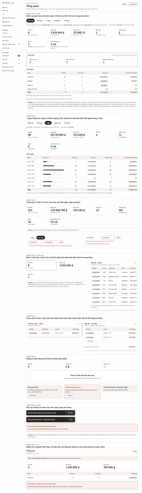
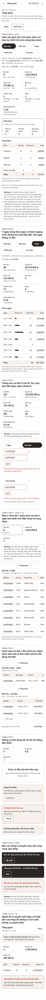
Đường: Báo cáo → Báo cáo đơn · /bao-cao/don · Task 240 (M6-17). Ca: BC02, C4, C5, C6. Trạng thái: A theo ngày lên đơn, nhóm theo nhân viên phụ trách (An 4 / Bình 3 / Chưa phân công 1, tổng 8; An 66,67%), đủ 9 cột, dòng tổng, sáu bộ lọc · B bấm ô "4" → ngăn "4 đơn" · C theo ngày hoàn tất (ẩn cột đơn lên, hủy), nhóm theo kênh · D bộ lọc Page mở, theo ngày, 9 chữ số · E 1 đơn, 0 đơn, đang tải, lỗi, chạy nền · F một Page, 403.
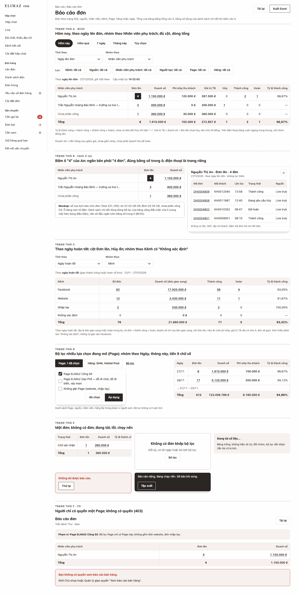
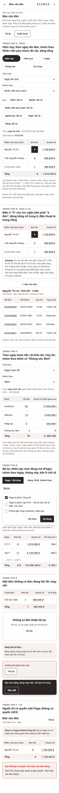
Đường: Báo cáo → Hãng vận chuyển · /bao-cao/van-chuyen · Task 240 (M6-17). Ca: BC02 (tỷ lệ hãng), C6. Trạng thái: A theo hãng và tài khoản (tên tài khoản dài), Tự giao, 12 cột (vận đơn tạo không gồm đã hủy), Viettel Post 66,67%, Best Express "—", dòng tổng; bấm tên hãng mở Báo cáo đơn · B COD 9 chữ số, 0 vận đơn, đang tải, lỗi.
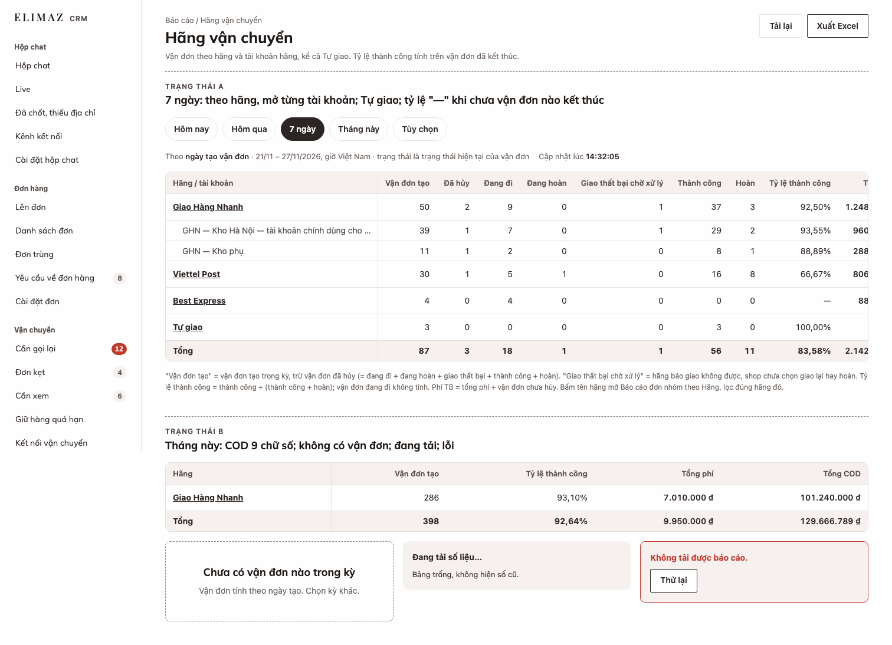
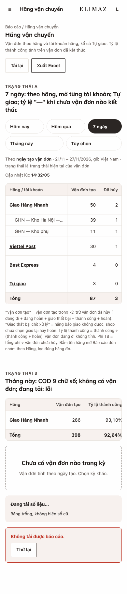
Đường: Báo cáo → Bán chạy · /bao-cao/ban-chay · Task 240 (M6-17). Trạng thái: A theo SKU, đơn lên chưa hủy, 50 dòng đầu của 1.200 SKU, tên 120 ký tự, "Xem thêm (tới 500 dòng)" · B theo mẫu (Áo A 7, Quần B trước Váy C), đã xem tới 500 dòng · C 0 dòng, đang tải, lỗi.
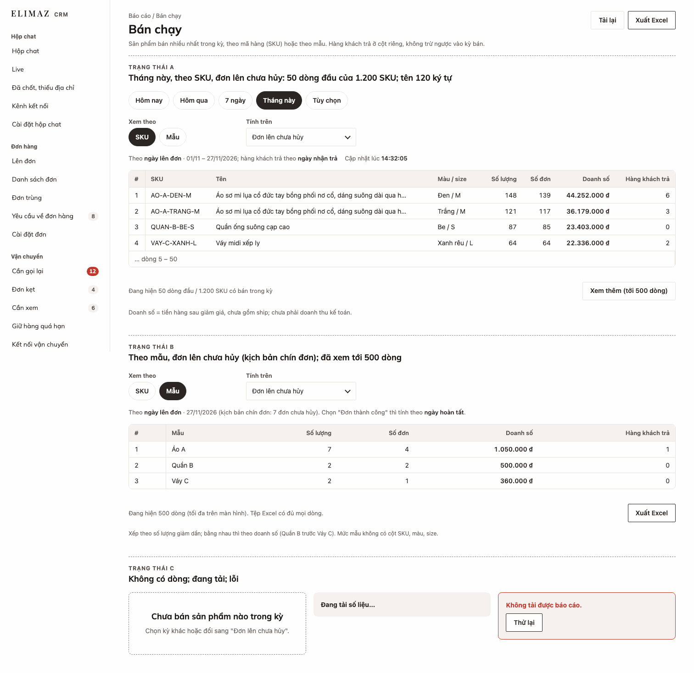
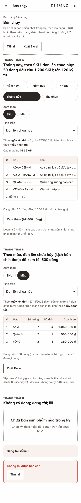
Đường: Báo cáo → Tồn và xuất nhập tồn · /bao-cao/ton-kho · Task 241 (M6-18). Ca: BC03. Trạng thái: A tab Tồn hôm nay, 1.200 mã, tên 120 ký tự, hết hàng, nút "Xuất danh sách sản phẩm" · B ngày đã qua (bản chụp 24:00), "Chưa có bản chụp trước ngày 15/11/2026" · C tab Xuất nhập tồn 7 cột, điều chỉnh âm, kỳ không có nhập xuất · D người chỉ có một kho (không nút xuất), đang tải, lỗi, 403.
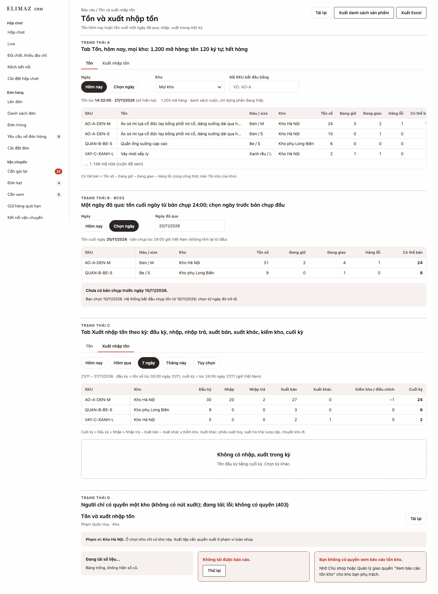
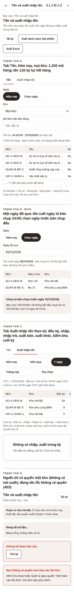
Đường: Báo cáo → Tệp xuất · /bao-cao/tep-xuat · Task 241 (M6-18). Ca: BC04. Trạng thái: A Quản lý thấy lần chạy của mọi người (cột Người tạo), ba nhóm (bán hàng, tồn, khách), đủ trạng thái (Đang chờ, Đang chạy, Xong, Lỗi ×4, Hết hạn), "Đã cắt ở 200.000 dòng", hạn tải, Tải về / Xem · B thông báo đang tạo tệp, chạy nền, xong; 429 quá 5 lần; 410 hết hạn · C rỗng, đang tải, lỗi.
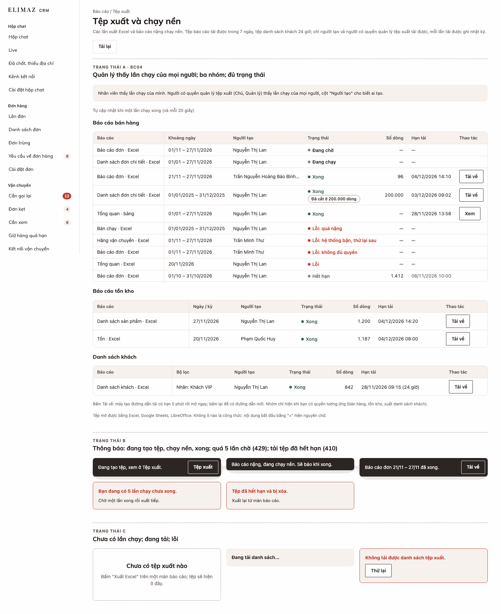
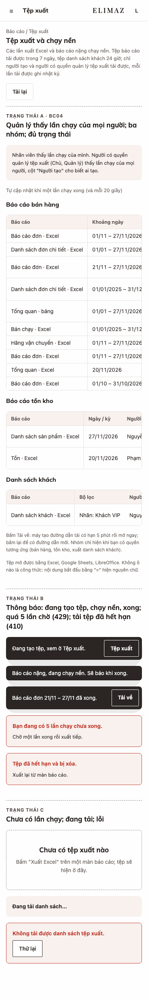
Màn: Khách hàng (console/src/screens/customers, M2) và Sản phẩm (console/src/screens/products, M1) · Task 241 (M6-18). Ca: PQ06. Trạng thái: A nút và hộp "Xuất danh sách khách" (không ô chữ, cột tệp, hạn 24 giờ, ghi nhật ký) · B đang gửi; người không có quyền không thấy nút · C nút và hộp "Xuất danh sách sản phẩm" (cột theo mẫu nhập, không giá vốn); người không có quyền.
Hiện tại (mockup đã duyệt của M2, M1)
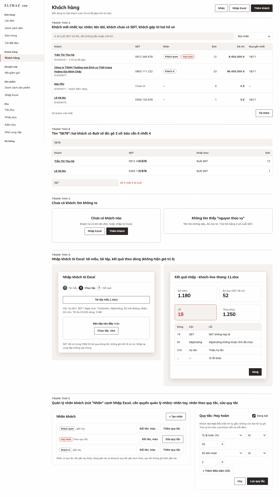
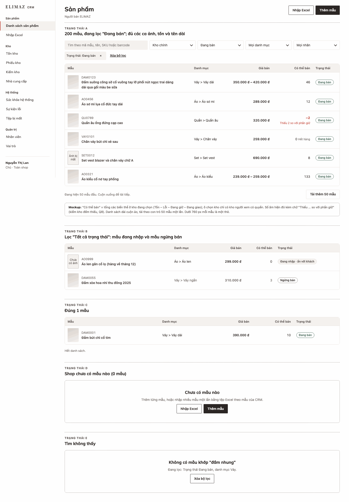
Đề xuất
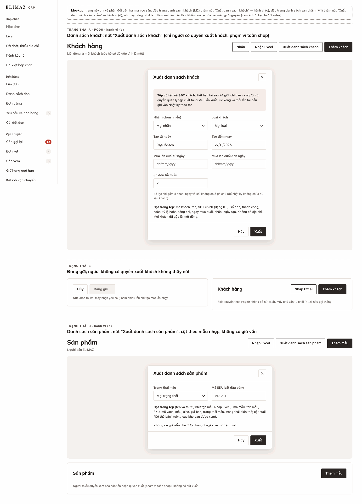
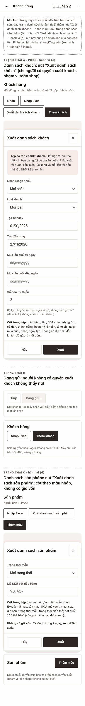
Danh sách đầy đủ, kèm cách đổi lại: docs/m6/mockup/ghi-chu.md. Ô "OK" điền khi chủ shop trả lời trong chat.
| # | Màn, task | Đề xuất | OK |
|---|---|---|---|
| (a) | Tổng quan, Báo cáo đơn · Task 239, 240 | Bấm một ô số: trên máy tính mở ngăn bên phải liệt kê đơn (tổng số ở đầu, trùng số trong ô), báo cáo vẫn thấy; trên điện thoại mở trang riêng có nút "← quay lại". | chưa |
| (b) | Năm màn báo cáo · Task 239–241 | Nút "Xuất Excel" ở góc phải đầu trang, cạnh "Tải lại"; bấm là chạy nền, tệp ở màn Tệp xuất. Chỉ người có quyền xuất ở phạm vi toàn shop thấy nút. | chưa |
| (c) | Danh sách khách (M2) · Task 241 | Thêm nút "Xuất danh sách khách" ở đầu trang (giữa "Nhập Excel" và "Thêm khách"), mở hộp chọn bộ lọc không có ô gõ chữ; tệp có SĐT, hết hạn tải sau 24 giờ. Chỉ Chủ, Quản lý (đề xuất theo H11). | chưa |
| (d) | Danh sách sản phẩm (M1), tab Tồn · Task 241 | Thêm nút "Xuất danh sách sản phẩm" ở đầu trang (cạnh "Nhập Excel") và ở màn Tồn; tệp cột theo mẫu nhập, không giá vốn, cột cuối "Có thể bán". | chưa |